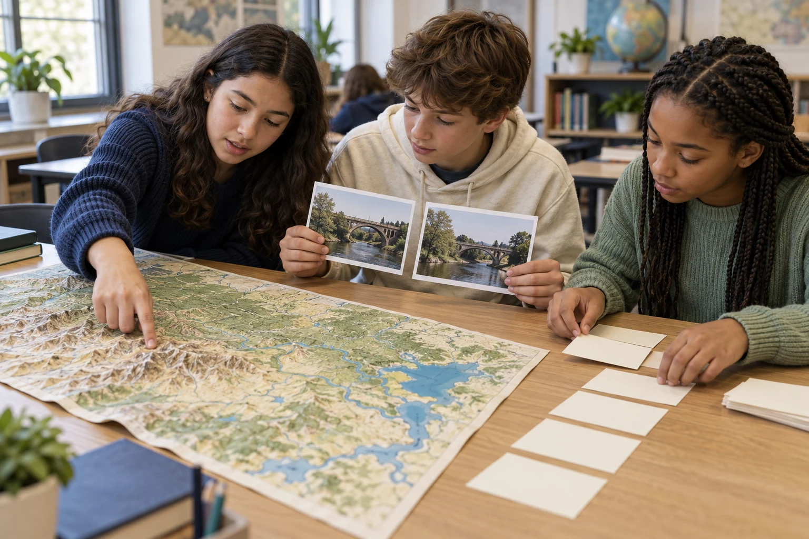
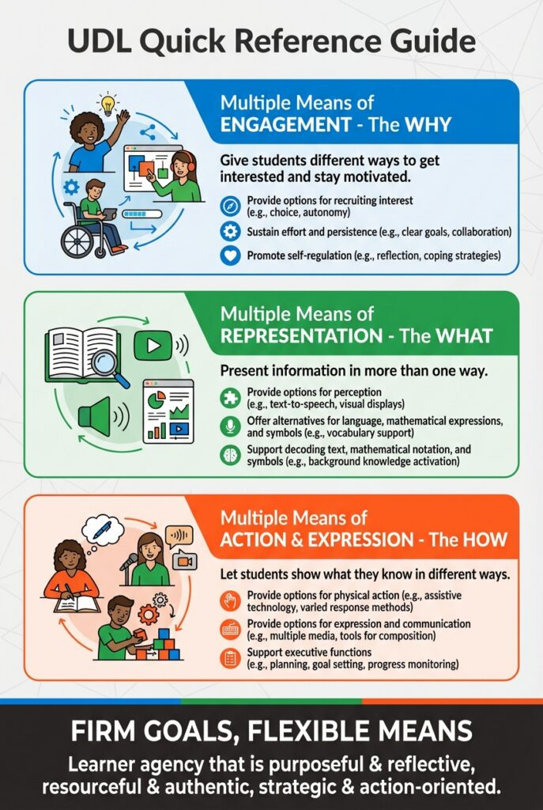
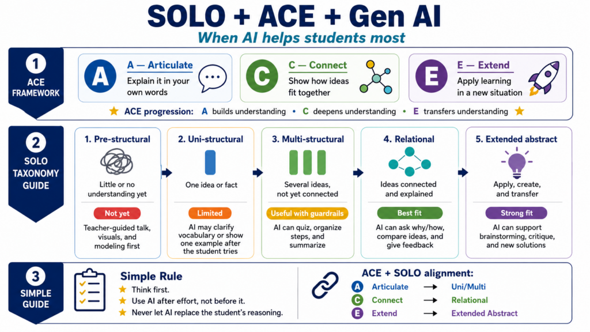

One learning goal. Several ways to use it.
The teacher chooses a grade or course, opens today’s prompt, and can move directly into a 15–30 minute activity or print the matching packet. Every resource names what students will do, what evidence the teacher will collect, and what to teach next.
The daily classroom front door
Flipbook calendars by grade/course. Show one source or stimulus, one thinking task, and a quick response. Project, share, or print in one step.
A useful planning route
Browse K–2, 3–5, 6–8, and 9–12, then choose the actual grade or named course. Filters: TEKS, topic, time, preparation, learning phase, language, and printable availability.
Source-based activities
Map comparisons, event maps, timelines, document investigations, jigsaw source sets, civic problem solving, and reasoning breakouts. Each includes modeling, individual accountability, and a debrief.
Make the paper version complete
Student sheets, source cards, vocabulary cards, organizers, ACE tickets, SOLO guides, teacher keys, weekly packets, and monthly posters. Keep teacher answers separate.
Use student thinking to plan
Entry/exit checks, annotated responses, misconception guides, targeted next steps, and selected Grade 8/U.S. History assessment connections. Include independent checks after group work.
Standards, supports, and routines
Current-year TEKS/ELPS guidance, UDL options, strategy cards, advance organizers, source-selection guidance, and educator AI planning prompts. Explain each routine with a classroom example.
Topics support discovery; the grade/course determines the curriculum.
Use recurring topic tags for place and geography; time and change; community and government; culture and perspectives; economics and choices; technology and society; and historical inquiry. Build the scope and sequence from the applicable TEKS and district pacing rather than assuming a single shared K–12 chronology.
Project folder: hlc/. Dedicated repository: mguhlin/hlc. Public home: mguhlin.github.io/hlc/. The prior URL returned HTTP 404 before this project was created; preserve stable resource IDs as the collection grows.
Today’s lesson starts with one page.
Follow the supplied flipbook specification: a large date, a paper-like page, arrows and swipe, keyboard navigation, Today, a month grid, projector mode, print, and a shareable link to each day. Hide answers and teacher guidance from the projected student view.
Default content model: 37 five-day modules = 185 authored instructional slots per grade/course track. The 185 is a content target, not a claim about every district’s required school days. School-day numbering stays stable while teachers map lessons onto their own calendars.
Two pacing modes: sequential school-day mode delivers every lesson; optional weekday mode preserves the Monday–Friday rhythm and identifies lessons skipped by holidays. Each day must stand alone, and essential material must remain available for reassignment.
Save school-year dates, excluded days, language, and grade locally. Let teachers add holidays, closures, and make-up days. On non-school days show the nearest instructional day with a clear note. Use consistent local date handling; test timezone boundaries and leap years.
Same place. Different stories.
Your teacher displays two dated photographs of the same local building. Name one change and one thing that stayed the same. Point to the evidence.
“Before ___, but later ___. I know because ___.”
For the teacher
Use authentic, credited photographs of the same place. Read catalog dates aloud. Collect one comparison and the detail supporting it. If students invent a cause, ask what additional source would establish it.
Language: rehearse a comparison, then explain using evidence.
Go deeper: a local-history evidence lab.
| Day | Student action | Teacher’s check |
|---|---|---|
| 1 · Retrieve & orient | Recall prior learning; examine a map, image, or short source preview. | What background needs restoring before this week’s inquiry? |
| 2 · Articulate | Describe a detail or explain a concept in students’ own words. | Is the statement accurate? Is it observation or inference? |
| 3 · Connect | Compare sources or connect cause, evidence, and consequence. | Does the student explain a relationship, beyond listing facts? |
| 4 · Extend | Apply the reasoning routine to a fresh source or new civic scenario. | Can students use the idea independently in a new context? |
| 5 · Check & reflect | Complete an independent ACE response and name a next step. | Use a task-specific SOLO guide to select reteaching or extension. |
The rhythm is a planning scaffold. Five minutes does not require all three ACE steps every day. Longer source packets belong in Inquiry Lab; an opener uses a short, immediately accessible stimulus.
Year-long production target
Create 185-day tracks for K, 1, 2, 3, 4, 5, 6, 7, and 8, plus named high school courses: World Geography, World History, U.S. History Since 1877, Government, and Economics. Nine elementary/middle tracks plus five course tracks produce 2,590 authored opener variants, and seven complete languages yield 18,130 localized opener variants. Shared routines reduce production work, but do not replace grade-specific sources, tasks, and standards review. Semester courses need shorter schedules; elective financial-literacy tracks can follow after the core release.
Students should leave with evidence of learning.

The required activity bundle
- Student goal: a content goal and a separate language goal.
- Materials and time: exact preparation, source links, print options, and an unplugged route.
- Instruction: a short model, guided practice, then independent thinking.
- Student product: an annotated map, ordered timeline, source comparison, supported claim, or practical proposal.
- Assessment: example responses, misconceptions, criteria, and tomorrow’s teaching move.
- Access: vocabulary, source adaptations, home-language support, and response options tied to the goal.
| Audience & activity | Classroom use | Evidence & next move |
|---|---|---|
| K–2 · Make and follow a map 15 minutes · paper and objects | Model a key and relative position; Grade 2 adds cardinal directions. A partner follows the route to the classroom library. | Each child draws or explains a workable route. Reteach symbols or direction words when the partner cannot follow it. |
| 3–5 · What changed in our town? 25 minutes · two credited sources | Compare dates, creators, and visible details from the same Texas place. Rehearse with a partner, then write a claim with evidence. | Collect each student’s comparison and explanation. Model the difference between visible change and an unsupported explanation of its cause. |
| 6–8 · Geography shapes choices 25 minutes · map and short records | Use a course-appropriate map and records to connect terrain, transport, settlement, and economic decisions. Make a concept map with labeled relationships. | Require an individual “because” explanation grounded in the source set. Reteach correlation versus causal evidence. |
| 9–12 · Sources in conversation 30 minutes · four short sources | Jigsaw: expert groups analyze creator, context, purpose, claim, and limitation; home groups compare. Students independently qualify a claim. | Check attribution and corroboration in the individual response. Address the misconception that disagreement automatically makes a source useless. |
| Government/Economics · A community decision 30 minutes · public data and constraints | Compare two feasible proposals, identify costs and tradeoffs, then recommend an option using published data. Distinguish a classroom scenario from an actual policy decision. | Score the reasoning and acknowledged limitation. Ask students to revise after peer feedback and explain the change. |
| 6–12 · Evidence breakout 20 minutes · paper or browser | Unlock a sequence by sourcing, chronological reasoning, map reading, and corroboration. Every lock requires a written or spoken justification; finish with a debrief. | Use the individual exit response to assess understanding. Provide hints and an untimed equivalent; assess reasoning rather than speed. |
These are activity designs, not completed source packets or a full curriculum. Historical claims require verified sources appropriate to the grade’s required place and period. Cultural and religious texts, when required, are examined through academic context and evidence-based inquiry.
First printable collection
Launch with eight reusable templates: observe/infer/wonder; source identity and purpose; then/now comparison; chronology and event map; cause/consequence web; jigsaw evidence matrix; ACE entry/exit ticket; and a SOLO response guide with a teacher next-step column. Each has an accessible HTML version, ink-saving Letter/A4 layouts, space for student work, and separate teacher guidance. Weekly source packets add actual artifacts and catalog credits.
Standards, access, and evidence belong together.
TEKS: grade, course, and school year
Each activity records the exact expectation, applicable version, official source, review date, and how the student product demonstrates the selected skill. Keep current standards distinct from future revisions; do not carry old identifiers into new wording.
Use the applicable current-year sequence at launch. Build a versioned registry and migration crosswalk for future implementation. Mark partial connections honestly; the center is a supplement until a curriculum coverage audit is complete.
Reference: official social studies guidance; the existing history collection provides a dated transition overview.
ELPS: teach and assess a language action
The 2024-adopted ELPS begin implementation in 2026–27. Use §120.20 for K–3 and §120.21 for Grades 4–12. Grade 3 must retain the K–3 ELPS even within a 3–5 browsing band.
Choose listening, speaking, reading, or writing targets and domain-specific supports. Provide visual vocabulary, frames, partner rehearsal, and gradually reduced scaffolding. Assess content accuracy and language growth separately; an oral answer is not independent-writing evidence.
Reference: official ELPS guidance.
UDL: firm goals, flexible access
Provide readable sources, zoomable images, transcripts, optional read-alouds, bilingual glossaries, keyboard access, reduced motion, and multiple response routes when they preserve the learning target.
Students may explain content orally or visually when appropriate. If the goal is a specific language domain, collect evidence in that domain. Keep alternate formats equally rigorous.
Reference: CAST UDL Guidelines 3.0.
SST: a teaching and assessment loop
SST means Student Success Tool here. Its statewide transition begins in 2027–28. Build selected Grade 8 social studies and U.S. History pathways using the applicable official assessment guidance and released/draft materials, with status and dates clearly recorded.
Use BOY to identify needs, MOY to adjust groups and scaffolds, and EOY to document learning. Offer short stimulus-based checks and transfer tasks; do not imply that every grade has an SST social studies assessment or that practice materials are official test items.
Reference: official assessment transition guidance.
Choose the strategy for the learning task.
| Strategy | Research reference | Observable classroom move |
|---|---|---|
| Jigsaw | Weighted mean d = 0.92 | Students become source experts, teach peers, then independently synthesize evidence. |
| Reciprocal teaching | Weighted mean d = 0.74 | Model summarizing, questioning, clarifying, and predicting; gradually transfer leadership to students. |
| Concept mapping | Weighted mean d = 0.66 | Students label and explain relationships among causes, decisions, and consequences. |
| Feedback | Weighted mean d = 0.50 | Give a specific evidence-related next step; students revise their claim and show what improved. |
Values checked in Visible Learning MetaX v1.4, February 2026. These are synthesis estimates across contexts, not predicted gains for this website. Do not add effect sizes or treat a threshold as a guarantee. Distinguish general feedback from narrower corrective-feedback categories. Retrieval, vocabulary, discussion, modeling, and advance organizers support the sequence when the task requires them; every strategy card needs a source and an implementation example.
The language switcher changes the whole resource.
Support English, Español, Tiếng Việt, 简体中文, हिन्दी, اردو, and العربية. Start Chinese with Simplified script and label it clearly; plan Traditional Chinese as an additional locale if needed.
Same activity, stable link
Generate language routes such as /hlc/es/calendar/grade-4/#day-26. The visible language switcher preserves grade, activity, and day while moving between localized pages. Remember the choice locally; use native language names rather than flags.
Translate navigation, search terms, prompts, hints, examples, teacher notes, answer keys, alt text, print materials, and glossaries. Keep original primary-source language visible alongside labeled translations or adaptations.
Quality and access
Use a canonical English record with validated locale overlays. Preserve standard identifiers, placeholders, source links, and answer consistency. Rebuild wordplay and language-dependent locks with a fluent reviewer.
Arabic and Urdu use right-to-left layouts, correct language attributes, suitable fonts, and mixed-direction handling for dates and standard codes. Test fonts in print. Label fallback text as English; show review status and do not count incomplete translations as completed locales.
ELPS support is more than translation: pair home-language access with an intentional English-language learning action. Allow bilingual planning and oral rehearsal; then assess the selected language target with recorded support.
Release sequence: build all seven locale routes and print support in the first pilot. Produce translations for the complete pilot; request fluent review before describing them as classroom-reviewed. Expand modules only after content, alignment, and translation checks pass. Translation review is a staffed dependency, not a feature software can certify.
Use visual warmth and authentic historical evidence.
Generated photorealistic images establish the learning setting: an investigation desk, collaborative source work, mapmaking materials, or printable activities in use. Label them as generated illustrations. Use credited archive photographs, maps, letters, and public data as the evidence students analyze. Historical reconstructions, if used later, need explicit labels and must never substitute for a primary source.
Use a consistent navy, cream, and sage palette, generous type, visible print controls, and large source images. Add a daily image when it contributes; text-only pages must still look complete. Do not require 185 images before launch. Keep instructional text in HTML, and record creator, rights/license, source URL, alt text, and illustration/evidence status for every image.


Existing effect-size posters informed the planning, but the current linked research table above is the numerical reference. All supplied graphics retain their content. Asset provenance is recorded in the companion credits file. Supplied graphics are included at the project owner’s request; no broader reuse license is asserted.
Prove one classroom sequence, then scale.
| Phase | Concrete deliverables | Release condition |
|---|---|---|
| 1 · Foundation Planning estimate: 1–2 weeks | Hosting/repository audit; grade/course map; standards registry; content schema; source inventory; visual system; seven-language shell; validators. | One resource renders accessibly on screen and paper in each locale. Source status and standards versions are visible. |
| 2 · Classroom pilot Planning estimate: 2–4 weeks | Five authored openers for each of K, Grade 4, Grade 8, and U.S. History: 20 total; four linked inquiry lessons; eight printable templates; complete seven-language pilot translations. | Teachers can prepare in under two minutes and run a five-minute opener. Student work demonstrates the intended thinking. Source and fluent-language review complete. |
| 3 · First-quarter release Planning estimate: 4–8 additional weeks | Expand reviewed pilot tracks to 45 days; add course-aware search, monthly posters, weekly packets, and check/reteach collections. Add other grade tracks as authors and reviewers are available. | No missing published-day content or unresolved source links. School-calendar mapping, print, keyboard, RTL, mobile, and projector checks pass. |
| 4 · School-year collection Schedule after pilot productivity is measured | 185-day core tracks, semester adaptations, vetted source sets, full translations, coverage reports, and future-standards migration tools. | Every published track has reviewed standards, sources, independent checks, complete localized materials, and a realistic coverage statement. |
Timing is an estimate for phased production, not a promise of a fully reviewed K–12 seven-language year in a few weeks. Staffing: product/development owner, grade/course content authors, standards/source reviewer, accessibility/print reviewer, and fluent reviewers for six translated languages. Roles may overlap. Measure actual authoring and review throughput in the pilot to set the remaining schedule and budget.
Technical approach
Use static, build-generated HTML hosted on GitHub Pages or the existing static host. Store activities and calendar modules in structured JSON; generate localized routes and print layouts from the same content. Build-time generation embeds the current module’s content so the classroom calendar does not depend on a runtime API. No accounts or tracking are necessary. Local storage remembers preferences; an optional cache can provide explicitly saved offline resources.
Start with a small, shared component system: resource card, source viewer, flipbook, grade/course chooser, language chooser, teacher disclosure, and print packet. Add search that indexes both activities and individual calendar days, with localized terms and topic synonyms. Reuse established language-switcher behavior from DrawSplat after inspecting its implementation, then test complete content translation and RTL layout.
Required content record
{
"id": "g4-local-change-01",
"grade": 4,
"course": "social-studies",
"schoolYear": "2026-2027",
"dayIndex": 26,
"moduleId": "g4-local-history",
"durationMinutes": 5,
"contentGoal": "Compare sources and support a claim",
"languageGoal": "Explain a comparison using evidence",
"phase": "deep",
"aceStep": "connect",
"teks": [{ "code": "verified before publication", "version": "current-year" }],
"elps": [{ "code": "verified before publication", "domain": "speaking" }],
"sources": [{ "url": "catalog URL", "creator": "source creator",
"date": "source date", "rights": "verified rights statement" }],
"prompt": "authored student-facing prompt",
"teacher": { "lookFor": "evidence supporting the comparison",
"misconception": "an inferred cause is treated as visible evidence",
"nextMove": "identify another source needed to establish the cause" },
"supports": ["visual vocabulary", "partner rehearsal"],
"relatedActivityId": "g4-local-history-lab",
"translationStatus": {},
"review": { "status": "draft", "standards": null, "sources": null }
}Schema illustration only. Placeholder standard codes and source URLs must fail the publication validator. Full records also need learning criteria, answer guidance, print references, accessibility metadata, strategy sources, image credits, and review dates.
Validation and classroom acceptance
- Content gate: required fields, unique IDs, valid links, no placeholders, complete published tracks, verified standards versions, reviewed sources, and matching answers.
- Language gate: complete keys, preserved identifiers/placeholders, no unintended English fallback, localized search, RTL and font checks, reviewed language-dependent puzzles.
- Interaction gate: Today, previous/next, deep links, month jumps, keyboard/swipe, focus return, reduced motion, hidden teacher answers, projector mode, and no-JavaScript reading access.
- Calendar gate: weekends, holidays, closures, partial weeks, custom start/end dates, before/after-year fallbacks, and consistent date labels across timezones.
- Print gate: Letter/A4, monochrome, adequate writing space, clean page breaks, readable source credits, RTL, and student packets without teacher answers.
- Learning gate: independent student work matches the objective; groups do not conceal individual gaps; feedback changes the next teaching move. Collect teacher notes without requiring student accounts.
- Publication gate: run the build and checks, commit and deploy approved scope under the standing authorization, then verify live routes, images, language changes, calendar navigation, and print output.
Turn the linked ideas into classroom tools.
| Resource | Practical contribution |
|---|---|
| History and social studies collection | Starting inventory of classroom routines, grade-band examples, event maps, sources, and standards-transition guidance. Adapt and verify rather than scrape indiscriminately. |
| ACE: Surface to transfer | Student response stems and a progression from describing to connecting to applying. |
| ACE and deeper thinking | Adapt its response/assessment loop to social studies. Verify subject-specific expectations and assessment guidance rather than importing science alignment. |
| Critical thinking breakouts | Evidence locks, source comparison, explanation, multilingual hints, and an untimed paper equivalent. Use its activity structure with sources appropriate to the social studies course. |
| Hands-on learning | Paper-first maps, partner reading, expert groups, and annotated source work tied to independent checks. |
| Advance organizers | Source previews, prequestions, concept overviews, comparison frames, and quadrant outlines before difficult material. |
| High-impact strategy planning | Match a teaching move to the learning phase. Keep reasoning with students; verify research values against current primary references. |
| Augmented educator framework | Teacher-side planning roles, tool suitability, human review, and supervised critique after students first attempt the task. |
| Learning Forward resources and inclusive coaching scenarios | Coaching cards: acknowledge a barrier, reframe through UDL, and commit to one testable classroom change. |
| Supplied strategy reference tool | Teacher strategy lookup organized by surface, deep, and transfer. Re-author original classroom cards with current research references and the center’s own presentation. |
| National Archives analysis tools · Portal to Texas History · USGS historical maps | Candidate evidence collections. Select individual source records, verify access and reuse rights, and preserve catalog metadata in student packets. |
Reviewed September 30, 2026. Linked author resources were fetched and read for this plan; the original /hlc/ reference was unavailable. Research values and ELPS implementation were checked against primary sources. The full future TEKS crosswalk and SST item-bank alignment remain build-stage work.